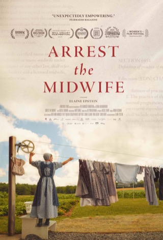

Arrest the Midwife
From the festival
When an infant dies during birth at an Upstate New York hospital, prosecutors file 95 felony charges against the attending midwife but none against the doctor who performed the delivery. That 2021 case is at the heart of Elaine Epstein’s latest documentary, an impassioned plea advocating for the essential work of midwives. Liz Catlin primarily provided care to New York’s underserved Mennonite community, attending hundreds of home births without incident until complications led her to bring a laboring mother to the hospital. So outraged are her patients at Catlin’s predicament that the normally cloistered women break with their religious beliefs to speak out on her behalf. In a country where maternal deaths from childbirth outstrips that of any other industrialized nation and where rural Americans have few healthcare options, midwifery is often the last best choice for a safe birth. Epstein’s compelling film argues that the state and its doctors would do better to work with midwives rather than against them. —Shari Kirzirian 2025 MIND THE GAP CREATION PRIZE HONORABLE MENTION
- Directed by
- Elaine Epstein
- Country
- USA
- Year
- 2025
- Running time
- 78 minutes
- Language
- English
- Guests
- Elaine Epstein Director/Producer, Robin Hesssman Producer
Source: Festival website programme (MVFF48): Wayback Machine copy; Festival film page: Wayback Machine copy; Poster from Good Docs (distributor)